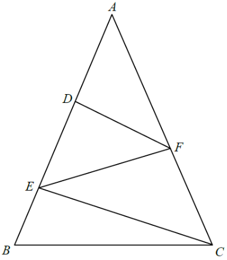

幾何 · 相似、畢氏定理與中點定理

$$EB=x,\quad AD=DE=2x,\quad AE=4x,\quad AB=AD+DE+EB=5x$$
因 $AB=AC$，故 $AC=5x$。
$$\angle AEC=\angle ADF=90^{\circ}$$
$$(4x)^{2}+60^{2}=(5x)^{2}$$
$$16x^{2}+3600=25x^{2}\quad\Longrightarrow\quad x^{2}=400,\ x=20$$
$$AF=FC=\frac{AC}{2}=\frac{100}{2}=50\text{ cm}$$
$$EF=FA=50\text{ cm}$$
易錯：只算出 $AF=50$ 便停手；要再利用直角三角形的斜邊中點性質，才知 $EF$ 同樣是 $50$。